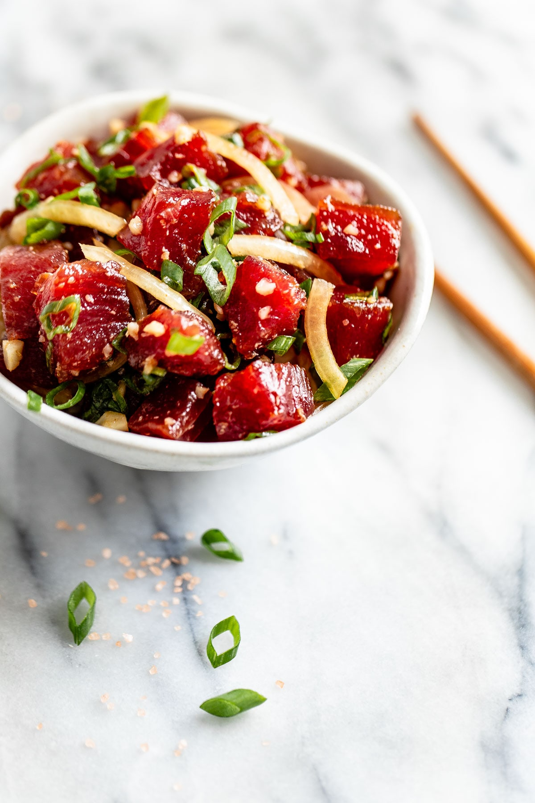

Ahi Poke

Description
This recipe will show you a simple and easy way to make a delicious bowl of ahi poke!
Poke is a refreshing Hawaiian salad of fresh ahi tuna steak cubes tossed with soy sauce, sesame oil, and green onions for a dish full of umami flavor.
Ingredients
- 2 pounds fresh tuna steaks, cubed (Sashimi Grade)
- 1 cup soy sauce
- 3/4 cup chopped green onions
- 2 tablespoons sesame oil
- 1 tablespoon sesame seeds
- 1 tablespoon crushed red pepper
Steps
- Place tuna in a medium non-reactive bowl
- Add soy sauce, green onions, and sesame oil
- If you want it to be spicy, add crushed red pepper!
- Mix ingredients together
- Garnish with sesame seeds
- Serve and Enjoy!